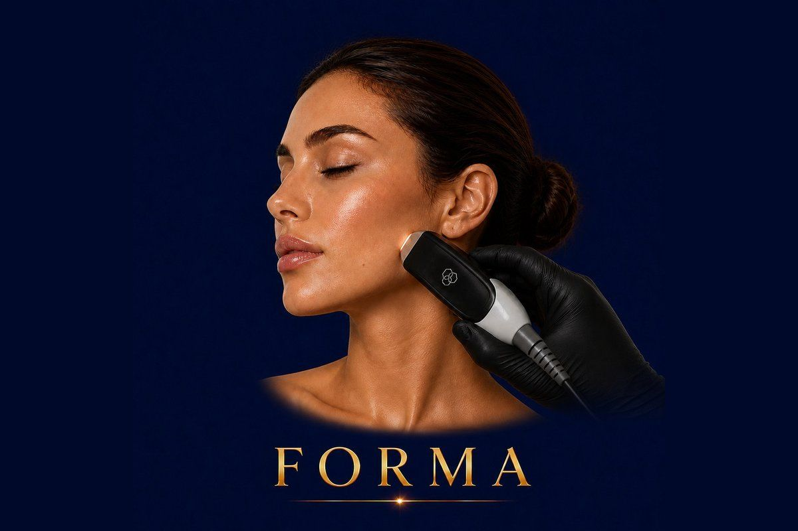

Skin Rejuvenation
Pain-free radiofrequency lifting from InMode — tighter, firmer skin with zero needles and zero downtime.
✓ Full medical content — verified for SEO and patient information.

About
Forma is a non-invasive radiofrequency (RF) skin tightening treatment from InMode — the same medical aesthetic company behind Morpheus8 and BodyTite. It uses controlled heat delivered through advanced radiofrequency to warm the deeper layers of the skin, stimulate collagen and elastin production, and tighten existing tissue from within. Unlike older RF devices, Forma uses a real-time temperature feedback system, meaning the device automatically keeps the skin at the precise therapeutic temperature — not too cold to be ineffective, not too hot to be uncomfortable. This is what makes it one of the most controlled, comfortable, and safe RF skin tightening platforms available worldwide. Forma is FDA-approved, fully non-surgical, completely needle-free, and has no downtime. It works on the face, neck, jawline, around the eyes, and other delicate areas where surgery is too aggressive but visible results are still wanted.
Why It Works
The Process
45 minutes depending on the area treated
The experience is intentionally relaxing: 1
Skin assessment & cleansing Your skin is cleansed and the doctor reviews your concerns, target areas, and treatment goals. 2
Application of glide medium A conducting gel is applied to allow the device to move smoothly across the skin and to ensure even RF delivery. 3
Forma RF application The Forma handpiece is gently moved over the target zones in circular motions
The skin gradually warms to the precise therapeutic temperature, where collagen contraction and stimulation occur
The temperature is auto-regulated — never too hot, never too cold. 4
Finishing The gel is wiped off, soothing skincare is applied, and you can immediately go back to your normal day — including makeup, work, exercise, or social events
Forma is typically recommended in a series of sessions for maximum collagen-building effect, then maintenance sessions to preserve results long-term
Who It's For
Safety First
Quality You Can Trust
Treatment Comparisons
HIFU (High-Intensity Focused Ultrasound) goes deeper, targeting the SMAS layer beneath the skin for a stronger lifting effect — but it can be slightly uncomfortable and produces a sharper, more dramatic lift in fewer sessions. Forma is gentler, more comfortable, painless, and ideal for fine refinement, eye area, and patients who want gradual results. Many patients combine both.
Morpheus8 also uses RF, but delivers it through tiny microneedles deep into the skin — providing more dramatic results, including treatment of acne scars and significant collagen remodeling. However, Morpheus8 has some downtime (redness, micro-marks for a few days). Forma is fully non-invasive with zero downtime — best for surface tightening and maintenance.
Thread lifts physically lift sagging tissue using dissolvable threads inserted under the skin — strong, immediate lift, but more invasive. Forma is non-invasive and builds collagen gradually. Many patients use Forma to maintain and extend thread lift results.
A surgical face lift provides the most dramatic and longest-lasting results — but with anesthesia, scars, and weeks of recovery. Forma is for patients who want subtle, gradual improvement without any surgical commitment.
Hydrafacial focuses on the skin surface — glow, cleansing, hydration. Forma focuses on deeper tissue tightening. They complement each other perfectly, which is why Hollywood Clinic offers them together as the iFace package.
Investment
Forma Skin Tightening
The price of a Forma session at Hollywood Clinic is set after a free consultation, and depends on: Treatment area — full face, lower face only, neck, eye area, or combination.
Final pricing is determined after a free consultation, because every case is different.
Book Free ConsultationWhy Hollywood Clinic
Dr. Rana Safwat — Dermatology, Laser & Non-Surgical Aesthetics Consultant, 12+ years of experience, ideal for comprehensive skin tightening plans integrating Forma into a wider protocol
Dr. Marwa Magdy — Aesthetic Dermatologist & Advanced Injector, expert in combination treatments. Highly experienced in integrating Forma with HIFU, Morpheus8, fillers, and biostimulators for full-face lifting plans
Dr. Nesma Samir — Laser Aesthetic Dermatology Specialist, 12 years of experience, ideal for Forma treatments on patients with parallel skin concerns (pigmentation, sensitivity, acne-prone skin)
FAQ